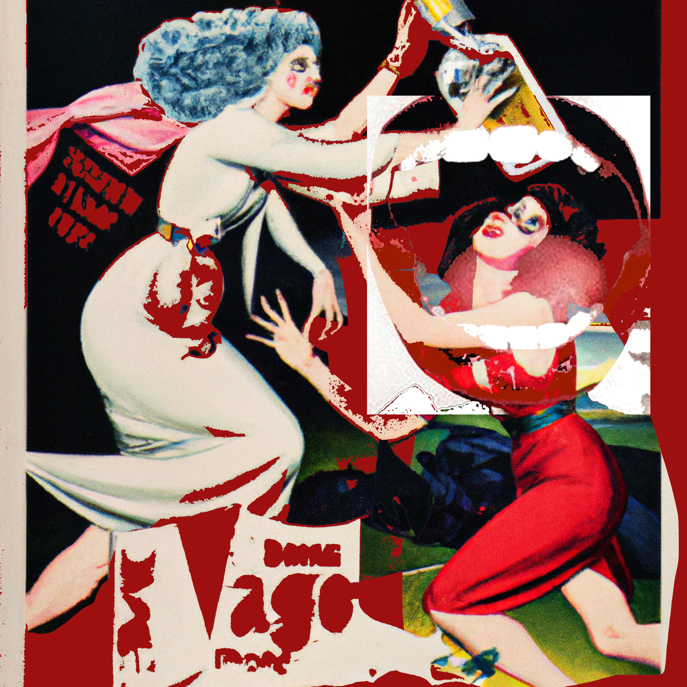

This site will highlight the obvious blemish and concolence of reality, in a way that will gamify materiality in a purely expressive and child-like way. In the hopes of indicating the paradox and the chaotic complexities of life, I will try to coin to venture etherealness and whimsicality into the gates of retro illustrations, acid posters, retro, anti-design, 90 nostalgia, and frasurbane art. This magazine site will contain visuals of mostly digital collage-like designs for the reason and demand of real touch . It will always have contrasting colors, sharp graphics and static typographic layouts to give the site movements and dimensions. Artists have used mirrors to look outward, symbolising sight and truth. Early modern personifications of truth often incorporated mirrors and scales. Initially this magazine will serve as an act of mirroring to viewers.
